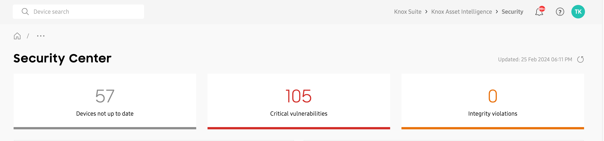
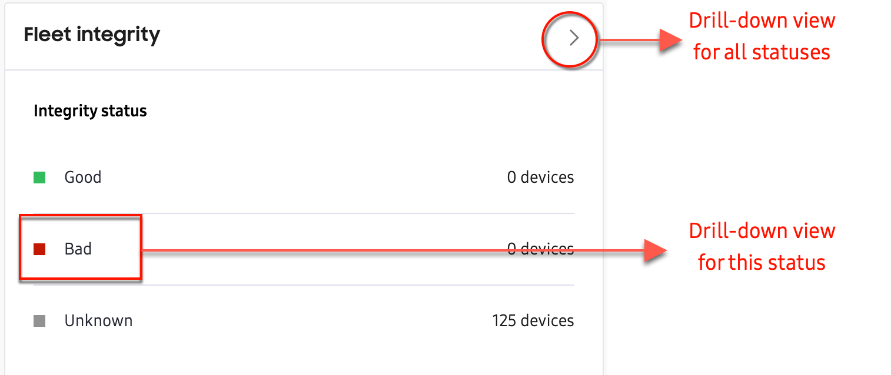
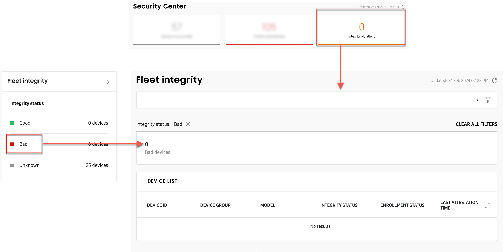
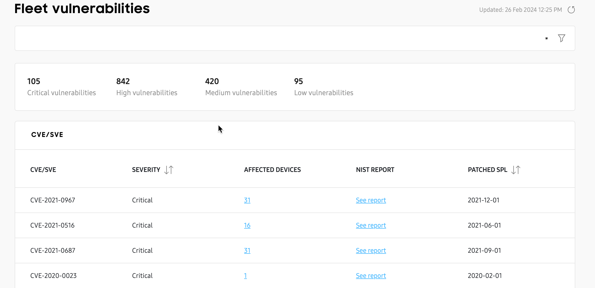
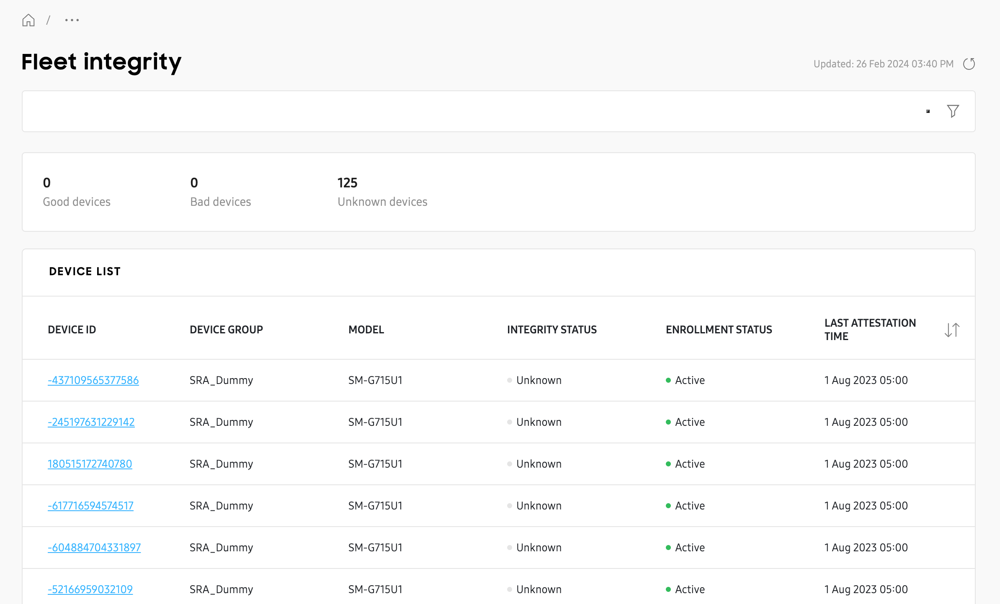

Security center (Labs)
Last updated April 3rd, 2024
The Security center dashboard insight lets you track vulnerabilities across different Samsung device models in your fleet. It provides the ability to know which individual devices are at risk from a particular vulnerability, and which are covered by the latest security patch.

The Security center insight’s main tile lets you know how many devices in your fleet need security patch updates, how many devices have known vulnerabilities, and how many have fleet integrity violations (failed Knox Attestation).
In the notification area, you’ll see the deployment (device model and security patch version) with the most devices in your fleet, and its total vulnerability count. Click VIEW to see the list of vulnerabilities for these devices.
Note
The Security center main tile view is only available on the main Dashboard.
Expanded view

You can access the Security center’s expanded view by either clicking the tile’s expanded view button (>) on the main Dashboard, or by clicking Security in the left navigation pane.
The Security center insight’s expanded view page is divided into the following components:
- Summary
- Fleet vulnerabilities
- Fleet integrity
- Vulnerabilities per device model
In the top section you’ll see a summary of your fleet’s security status, letting you know how many devices are not up-to-date with the latest security patches, the number of critical vulnerabilities, and how many failed a boot-time integrity check (Knox attestation). Click any tile in the summary to get a drill-down view of the data.

Fleet vulnerabilities
The Fleet vulnerabilities chart provides a breakdown of your fleet’s vulnerability categories (Critical, High, Medium, Low), and lets you know how many vulnerabilities exist under each category. Hover over each segment in the chart to get an explanation of the category.
Below the chart, you can click DOWNLOAD ALL SECURITY VULNERABILITIES to get a ZIP file containing all vulnerabilities in CSV format.
Click any vulnerability category in the chart (Critical, High, Medium, Low) to get a drill-down view of the data, filtered by that category. You can also click the drill-down button (>) to view data for all fleet vulnerability categories.

Fleet integrity
Using Knox Attestation, the Fleet integrity chart provides insight into whether your devices have ever installed non-official Samsung software. You can see how many devices have a Good, Bad, or Unknown status. Devices that have failed Knox Attestation receive a Bad status. In the notification section at the bottom of the chart, you’ll see when attestation was last checked, and when the next check will occur.
Click any status in the chart (Good, Bad, Unknown) to get a drill-down view of the data, filtered by that status. You can also click the drill-down button (>) to view data for all fleet integrity statuses.

Vulnerabilities per device model
The Vulnerabilities per device model table lets you know the total number of vulnerabilities, and total device count for every unique device deployment (device model and security patch pair) in your fleet.
Click any value in the Vulnerabilities column to get a drill-down view page showing all CVE (Common Vulnerabilities and Exposures) and SVE (Samsung Vulnerabilities and Exposures) reported for that specific deployment.
Click any value in the Device count column to a get list of every device of that specific deployment.

Drill-down views
Summary
The Security center summary provides access to three drill-down view pages.
Devices not up to date
Click the Devices not up to date tile to see which devices and device models in your fleet are not updated to the latest security patch. On the drill-down page, you can search for a specific device IMEI, or use the filters to find a specific model or installed security patch date.

Critical vulnerabilities
Click the Critical vulnerabilities tile to see a drill-down view page listing every reported Critical vulnerability in your fleet. This page provides the same information as the drill-down view page for Fleet vulnerabilities (when the Critical filter is applied).

Integrity violations
Click the Integrity violations tile to see a drill-down view page listing every device that failed Knox attestation. This page provides the same information as the drill-down view page for Fleet integrity (when the Bad filter is applied).

Fleet vulnerabilities
The Fleet vulnerabilities drill-down view page provides a breakdown of every CVE (Common Vulnerabilities and Exposures) and SVE (Samsung Vulnerabilities and Exposures) vulnerability reported in your fleet.

From this page, you can use the search button to find details about a specific vulnerability, or use the filter button to display vulnerabilities for a specific category (Critical, High, Medium, Low).
Click any link in the Affected devices column to get a 2nd drill-down view page that displays every device ID, group, and model affected by that specific vulnerability, and when that vulnerability was patched. On the 2nd drill-down view page, click a DEVICE ID to view each device’s expanded details in a sliding panel.

On the Fleet vulnerabilities 1st drill-down view page, click See report in the NIST Report column to go to the National Institute of Standards and Technology (NIST) database. From there, you can view comprehensive details about that vulnerability including its Description, Severity, and Known Affected Software Configurations.

Fleet integrity
The Fleet integrity drill-down view page lets you know the integrity status of every device in the fleet, and when they had their last attestation check. From this page, you can search for a specific device IMEI, or use the filters to find a specific model or installed security patch date.

Vulnerabilities per device model
There are two drill-down view pages for Vulnerabilities per device model.
[Model name] vulnerabilities
Click any value in the Vulnerabilities column to see a vulnerabilities drill-down view page for that specific model and security patch (deployment).

Similar to the drill-down view page for Fleet vulnerabilities, this page will show you every CVE and SVE vulnerability reported for the specific deployment, how many devices are affected per vulnerability, and when that vulnerability was patched.
Click any value in the AFFECTED DEVICES column to see a 2nd drill-down page that lists every device in your fleet with that specific deployment, or click See report in the NIST Report column to get more details about that vulnerability from the NIST database.
Devices not up to date
Click any value in the DEVICE COUNT column to see a list of every device in the fleet belonging to that specific deployment, the group the devices belong to, and their current status. Click a DEVICE ID to view each device’s expanded details in a sliding panel.

On this page
Is this page helpful?